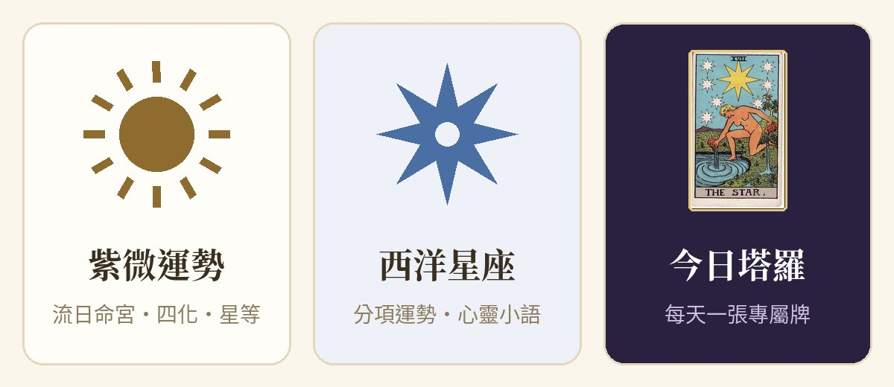
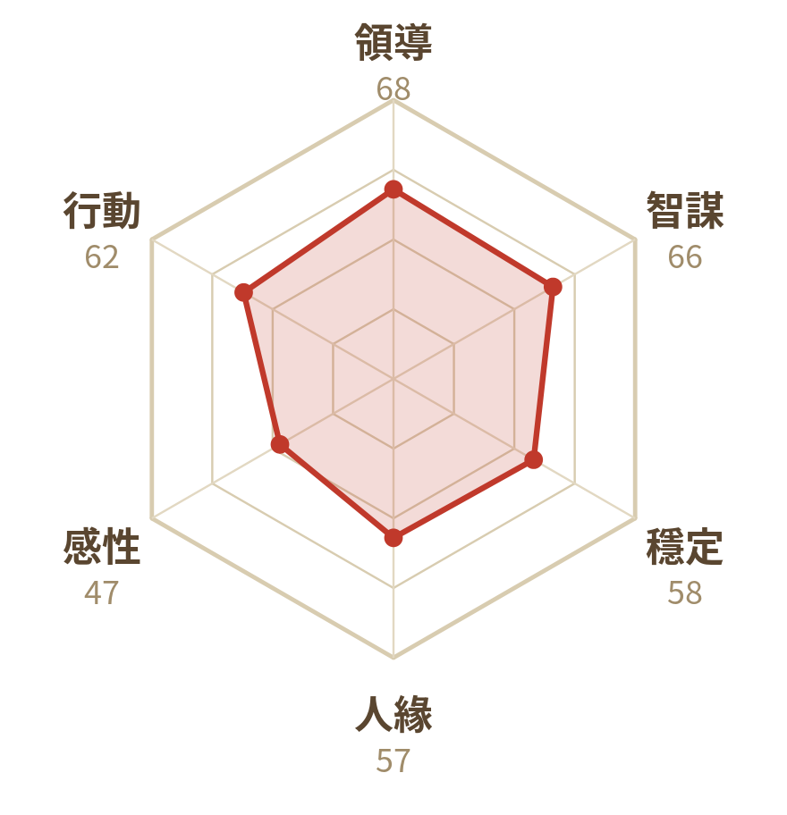
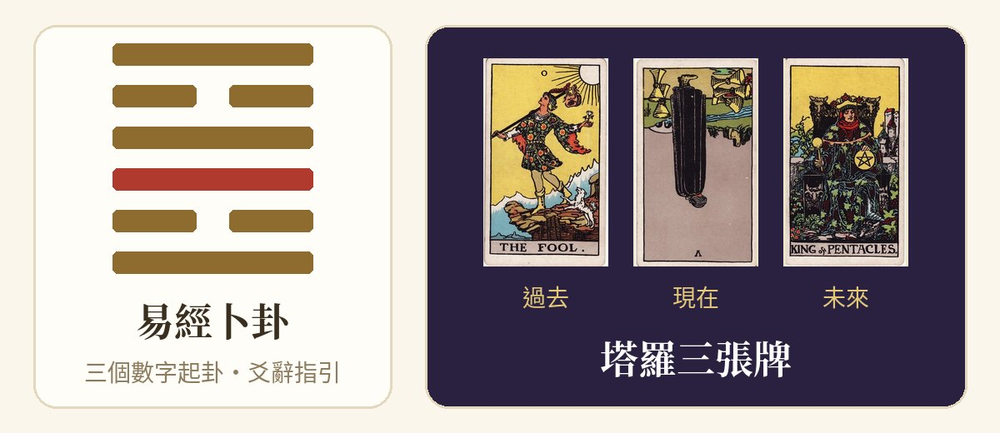
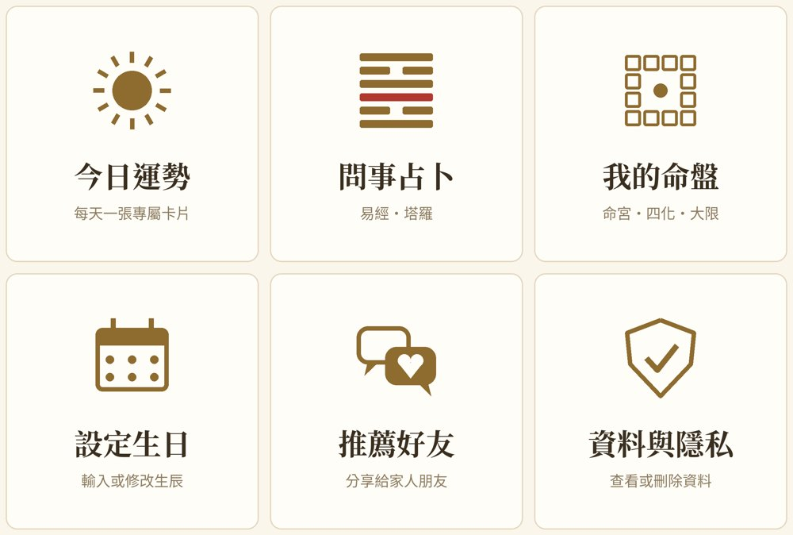

「每日命盤運勢」是一個免費的 LINE 官方帳號：輸入一次出生年月日與時辰，之後每天點選單，就能看到依自己紫微命盤推算的專屬運勢。不用下載 App，所有功能都在 LINE 聊天室裡完成。
☀ 今日運勢
點一下「今日運勢」，會收到三張可以左右滑的卡片：

- 紫微運勢：依當天的流日命宮與流日四化計算，給一到五顆星、一段白話解讀，附黃曆宜忌、幸運色與喜神方位。
- 西洋星座參考：愛情、事業、財運、健康分項星等，可搭配血型，並附一句當天的心靈小語。星座有五顆星的項目時，紫微卡會標出「星座加分・今日幸運」。
- 今日塔羅：每人每天固定一張牌，使用 1910 年原版偉特塔羅牌面，附關鍵字與牌義；抽到逆位時牌會倒轉顯示。
✦ 我的命盤
「我的命盤」以人格特質呈現，分數與「紫微斗數 AI 大師」完全相同：

- 類型標題：例如「管理型・穩重包容・執著在福德」。
- 六維雷達圖：領導、智謀、穩定、人緣、感性、行動。
- 格局基調：殺破狼（開創型）、機月同梁（幕僚型）、紫府廉武相（管理型）、巨日（傳播型）。
- 優勢與盲點：各列三到四點。
- 命盤資料：命宮、身宮、五行局、生年四化、目前大限，以及外顯、內心、金錢觀、做事方式的三層人格。
🔮 問事占卜
心中有事想問，點「問事占卜」後選擇易經或塔羅，不需要先設定生辰。

- 易經卜卦：選類別（事業、愛情、財運、健康、婚姻、投資、購屋、官司），再打三個數字或按「幫我抽三張牌」。卦卡有六爻圖（動爻標紅）、卦名、吉凶分數、爻辭、白話指引與變卦。
- 塔羅三張牌：選類別（感情、事業、財運、健康、整體運勢），按「抽三張牌」。以聖三角呈現過去、現在、未來，每張牌附牌面、牌位導讀與牌義，最後給整體提示。
💡 設計特色
- 長輩友善：卡片最寬版面、字級放大，文字會跟著 LINE「設定 → 聊天 → 字型大小」一起放大；選單是兩排六大格。
- 免費：所有回覆都是使用者點選後才回，不主動推播。占卜與塔羅使用內建資料。
- 隱私：只存排盤需要的出生資料，不存姓名、電話。隨時可在「資料與隱私」刪除資料。
- 僅供參考：內容依傳統命理推算，不構成醫療、投資或法律建議。
📱 如何開始
- 在 LINE 加入好友（ID：@110pbzay）。
- 點選單「設定生日」，輸入國曆或農曆生日、時辰、性別（血型可不填）。
- 之後每天點「今日運勢」就好。
用手機 LINE 掃描 QR Code 也可以加入。

| 今日運勢 | 紫微、星座、今日塔羅三張卡 |
|---|---|
| 問事占卜 | 易經卜卦或塔羅三張牌 |
| 我的命盤 | 人格特質雷達圖與命盤資料 |
| 設定生日 | 輸入或修改生辰 |
| 推薦好友 | 把帳號分享給家人朋友 |
| 資料與隱私 | 查看隱私政策或刪除資料 |